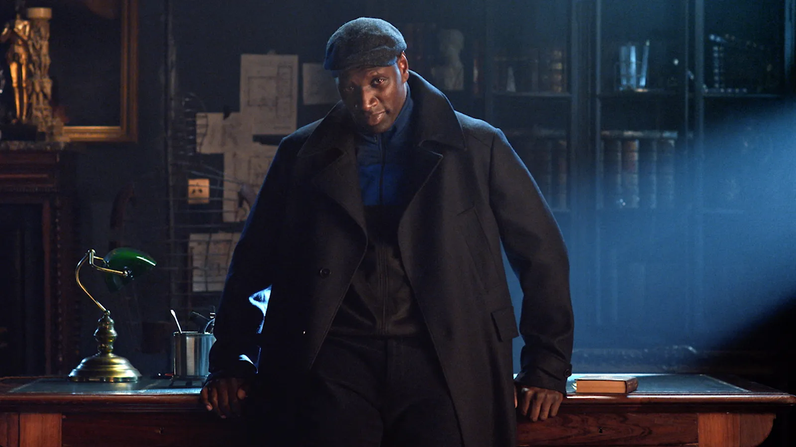
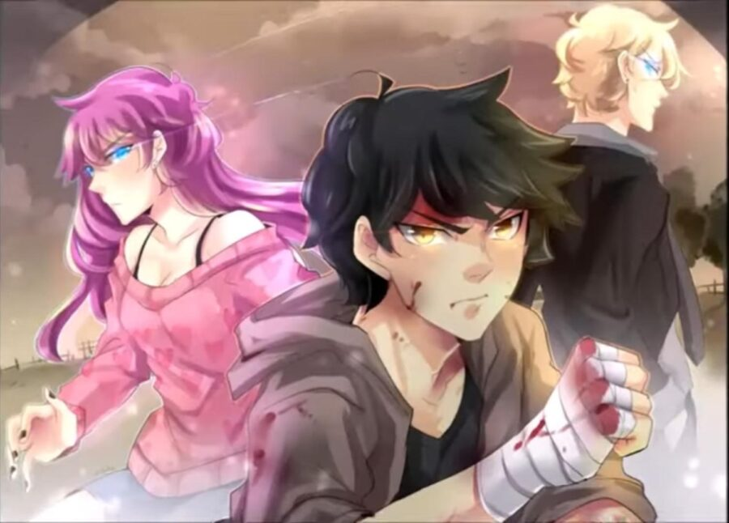
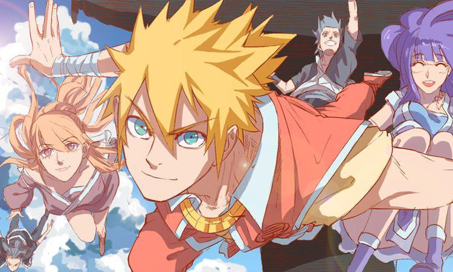
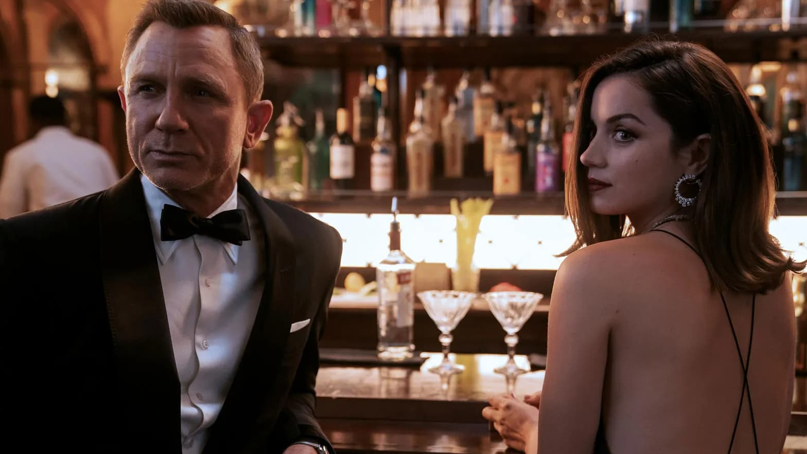
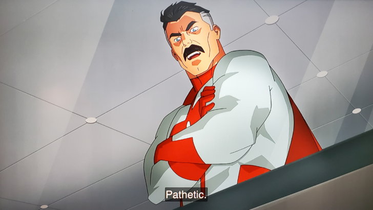

RSS Feed
RSS Feed
Reviews 11
15 Oct 2021Part of the Reviews Series.
Cobra Kai
- TV
- Season 3
- previously: Season 1 & 2
In my review of the first season, I said the show was constantly toeing the line of overuse on its narrative ropes. I really enjoyed the third season too, but it's clearly the season where the line gets crossed.
Rest of the review behind the spoiler tag!
Click for spoilerful review.
There's good and there's bad in the storylines and character development arcs.
Last time, I said I would be interested in how they handled Tory and Kreese. Tory is very much in the background. Her difficult background is briefly glimpsed, but mostly that doesn't make her more relatable. Instead of being a crazy bitch, she's now a crazy bitch in a difficult situation — but that happens, and it's not necessarily bad.
Kreese gets a lot of attention, in particular through the flashback fleshing his background. The issue is it doesn't work one bit. I reckon the goal of the flashback is to explain how Kreese got the way he was. But it doesn't really. Past Kreese is mostly sympathetic and good-hearted. What he goes through doesn't even explain why someone would become angry, bitter, violent, cynical, and jaded. They could have pulled that off, but they didn't. But what they really needed to pull off is to explain how he became a sociopath. Of course, people don't really suddenly become sociopaths (barring extremely extravagant plot events and/or brain damage), so they would have had a hard time pulliing that one off. The result is that the flashbacks have almost zero tie-in to the rest of the story (except explaining the origin of the term "Cobra Kai"), which is weird. Maybe they'll continue in the next season, but I'm not confident in their ability to salvage the plot line.
The biggest missed opportunity of the season lies in a character whose storyline gets really butchered: Hawk. Since the first season, it's obvious they are setting up a redemption/reconciliation arc between Hawk and Demetri. Compared to the other storylines, this one already felt sluggish. But mostly, things move along, coming to a head when Hawk breaks Demetri's arm. This should be the breaking point (pun intended) for Hawk. Afterwards, it's just awkward. I get they wanted him to flip in the final battle, but the timing just makes this awkward. Triple akward in fact as Demetri immediately welcomes him back ("don't worry for my arm bro!"), robbing the whole thing of its emotional payload. They also just push things way too far with Cobra Kai being assholes I think, removing a lot of the nuance that made the show great. There's being an asshole and then there's being a caricature of caricature of an asshole.
Daniel's Japanese adventure is meh, and feels like a huge wink. The "Daniel-san!!" cliffhanger is so cringe.
Aisha went MIA, probably for actor's reasons.
Robby's storyline is retarded, plain and simple. His action don't really add up, especially the ending point of "Kreese is cool, he told me to fight — never mind he just tried to stab you".
Okay, so I'm very negative and a bit disappointed — but I actually mostly enjoyed the thing. I probably couldn't bring myself to write such a long review for a thing I didn't care about anyway.
Let's talk about some good things. Johnny and Miguel's storyline were pretty good. I was pleasantly surprised that the Amy plotline did not feature some misunderstanding between Johny & Carmen. Demetri is hilarious as always and standing up for himself.
Can season 4 pull an Attack on Titan and turn this ship around?
Lupin
- TV show
- Part 1 (6 episodes)

Lupin is the first French TV show I've watched in forever. And, oh shock, it's actually pretty good.
The story centers around Assane Diop (played by the excellent Omar Sy), a professional thief. When he was young, his father was framed for a theft he didn't commit — something Assane only learns at the start of the season. We then follow his struggle against his mighty enemies, in order to get justice for his father.
Assane is inspired and emulates the character of Arsène Lupin — the gentleman burglar. This leads to a series of clever plans, tricks and deceptions that make the show quite entertaining.
Besides the great story, the show also benefits from the insane charisma of Omar Sy, who really sells the character.
Truly, a pleasure to watch.
Pragmatic Capitalism
- Book, by Cullen Roche
This was a book I enqueued on my read list when I started to learn about finance. I have mixed feelings about it.
The book is mostly concerned with discussing the monetary system, with some investment portfolio advice thrown in the middle. This is not capitalism, it's not finance, it's macro-economics. Fine, but what not what I expected from the book.
The description of the monetary system itself is well-meaning, but falls short for me. I'm not quite sure who the intended audience is. Roche keeps emphasizing some points — common misconceptions that seem to be his pet peeves — and to his credit that is very clear, though a little preachy. More advanced topics are unfortunately not that well-explained and seem to assume some familiarity with the system already.
You can tell Roche means well, but its content would have worked better as a series of blog posts. It would be hard to me to recommend it to anyone. It's too long to be an introduction, doesn't go far enough to be textbook, and doesn't explain the advanced concepts well-enough anyway. The portfolio advice is also well-meaning but all the same, I don't particularly recommend it.
It's not a bad book, but I'm not sure what it's trying to achieve. Meh.
FFF-Class Trashhero
- Webtoon
- up to chapter 86
Another entry in the leveling genre. In this one, we join the hero (that has been summoned to another world to defeat the demon king, nothing unusual) after he defats the demon king. However, it turns out that his performance is being graded, and he fails, because he actually murdered his party before confronting the demon king. So now he has to start all over again.
Why did he do such a thing? From his point of view, he was being abducted against his will, and the people in this fantasy land actually mistreated him pretty badly, beating him to toughen him up, having him run nonsensical errands, etc.
The story is fairly comedic in nature, there's some slapstick humor à-la-Konosuba!, albeit much less charming. But it sits uneasy between its dark premise and the comedic element. The hero's character is terrible, but the story is earnest in telling us that he has good reasons for it — he's not just being silly. At the same, the story also depends on its dumb factor. The hero starts being evil from the get-go in his second attempt, even as that's obviously not the correct way to succeed.
At some point, it also veers into a weird over-the-top power trip, and I'm not sure how the author will extirpate himself from this mess.
I enjoyed this, but I would have enjoyed it much more if the comedic element was dropped and the premise was left to shine. What could a bitter hero have done to try to pass while being subjected to the rules (or break free in other ways, or get revenge)? And there are already plenty of elements that could have made that good (for instance, how good or bad is it to kill a king to avoid a war?).
Still, everything before the power trip was engaging enough.
Kill The Hero
- Webtoon
- up to chapter 53
A fairly classical leveling-genre entry. The setting is very similar to Solo Leveling (modern-day South Korea, dungeons appear, some people get power, and a whole semi-corrupt industry of "heroes" springs up). The twist is that the protagonist is also a returnee that was betrayed in his previous life (another super common trop of the genre). Hence "kill the hero", where the "hero" is actually this scheming villain that everybody thinks is good. I was hoping the title was referring to some story-telling twist or some unusual perspective, but not really.
This one is bog-standard, but indubitably well done.
The Great Mage Returns After 4000 Years
- Webtoon
- up to chapter 82
Another "leveling" story that takes some of the basic genre building blocks and arranges them in yet another configuration. In this one, a very powerful mage (just like in I am The Sorcerer King) dies and returns in the future, this future is not modern-day South Korea, but instead some kind of medieval fantasy.
In his previous life, the mage was defeated by a demigod, some kind of malevolent super-powerful entity. In his new life, the mage seeks to find out what happened to his companions and to take on the demigods.
The story is a bit more earnest than average, and the tone reminded me of The Beginning After The End, which is great since that's one of the best leveling webtoons out there. Recommended.
Your Throne
- Webtoon
- up to chapter 67
Finally, a webtoon that's not about people powering up! This one follows two noble lady — Medea and Psyche. The cold ruthless Medea was promised to the crown prince, before the engagement was broken and he chose to get engaged to the sweet innocent Psyche. Medea swears to have revenge and retrieve what is rightfully hers. And then a lot of things happen but I don't want to spoil you.
This is pretty well done. One criticism I have is that it's at times a bit confusing. Another one is that it departs from the traditional arc format. While I applaud initiatives to be less formulaic, arcs are used because they work, and this works less well. What would have been arcs in other stories instead blend into one another. And I don't mean this in the positive, "story expertly woven" way. Instead, we're not given the time to breathe, assimilate what happened, participate in the protagonist's happiness, sadness, triumph or defeat and instead we're immediately trust into the next thing.
I think saying the story doesn't breathe enough is maybe clearer. As a result, it becomes much more emotionally muted than it could be. Its high points don't take you that high, and its low points don't take you that low. Which is too bad, because the story has potential.
Akudama Drive
- Anime
I watched on the recommendations of a few friends who said it was one of the best anime of the Fall 2020 season (this was a particularly dry season for me, I don't think I watched a single other anime from it, excepted giving Jujutsu Kaisen a try).
I ended up nonplussed. Like, it's not bad. It's not that great either. It's annoying because there are a lot of great things about it. I really dig the aesthetic, the character design is top-notch, the animation looks very good, the music is quite nice. But the story never really got me invested or even interested. The stakes are not that much, character development is meh-meh-meh, the ending is unsatisfying.
I think I'd recommend it if you really dig the outrun/retrowave/neon sci-fi aesthetic or if you watch anime for the eye candy. If you're story-driven, this will leave you hungry.
unOrdinary
- Webtoon
- up to chapter 235

This one looks straightforward, but I actually found it to be quite weird. In this world, most people get a special ability (usually fighting-related — I appreciated how straightforward they all were), and the strong trample on the weak in a very hierarchical society.
The story follows John, who doesn't have any ability, as he has a hard time at his high school, being unpowered as he is but still rather proud. Many twists ensue.
So what makes this weird? Well, first, the society being depicted is despicable. Unrealistically, and unsustainably so, in fact. By the way, fair warning, if you don't want to see kids beat each other meanly and bloodily for 200 chapters, you probably shouldn't read this. There's bullying on every second panel.
Still, surprisingly, no one ever dies — even after someone uses their head to bash some concrete. Nobody ever goes for the eyes somehow. In a world so full of bullying, there also isn't a single mention of suicide. Honestly, the world is so bad that you'd expect that to pop up, and also strong people to be murdered in their sleep.
But alright, none of that happens, and to enjoy the story you really got to take as a premise that it is the way of that particular world to be like this.
This has another awkward consequence, which is that almost everyone in the story is despicable. Yes, even the main character. There are maybe two main characters that are not loathsome, but they were strong and uncaring in a world where you can't walk through two hallways without finding some bullying, which uhhhm ... eeeeh. Some people start to improve towards the end, and to the credit of the writing, this is done in a subtle way.
You know what else is strangely lacking in a high-school setting? Nobody seems to have the slightest interest in romance and/or sex.
Webtoons often shy away from these themes, for what I ignorantly assume must be weird Korean cultural reasons? Although seeing that K-Drama is a thing, this at least makes no sense for romance. Often, there is some romance slapstick, like unreciprocated crushes, tsundere moments, and even the occasional lewd event where the male MC's head lands on some woman's breasts. I really don't get the absence of these themes, which are interesting and complex and inherently interesting to us humans. Someone please enlighten me.
Anyway, unOrdinary doesn't even have the slapstick. Nobody expresses even a iota of romantic intentions or sexual tension. And that's just weird.
With all that said, unOrdinary's story is quite gripping. Despite its characters being often (or at least initially) loathsome, it's a character-driven story and the characters are well-written. They have clear motivations, personalities, and as alluded earlier, there is real character development. The broader story is also solid enough that it makes you want to keep reading to know what will happen and how the characters will end up being implicated in it.
I'm conflicted about this one. On the one hand, I found it hard to put down once I got started, and there is objectively a lot that it does well on the story-telling front. Perhaps my problem with it is a lack of relatability to the characters, given the problems with the setting.
Second Life Ranker
- Webtoon
- up to chapter 84
Yet another formulaic leveling webtoon. A confusingly-named one at that, since in this one, the MC does not return from his previous life, but instead goes by the notes left by his deceased brother.
I don't have much else to say, it's fairly classic as an entry, but quite well done. You'll like this if you like the other leveling webtoon, and vice-versa.
Raid
- Webtoon
- up to chapter 95
Yep, another level webtoon! This one is of the Solo Leveling "monster gates spawn all over Korea" persuasion, though with less emphasis on RPG mechanics (no skill windows!) and less of a fantasy theme (no orcs and goblins and the rest of the fantastic bestiary, just plain old demons).
Aaand, it's okay. Entertaining, but clearly a notch under Kill The Hero and Second Life Ranker as far as not-particularly-original entries go.
Castlevania
- Anime
- Season 4
- Previously: Seasons 1-3
In its final season, Castelevania keeps being good, but imperfect, but damn entertaining.
Compared to the previous seasons, I feel like this one steps up the game in terms of animation. These last few fights are really impressive. On the other hand, maybe we didn't need quite that much fighting? When you get 4 fights back to back, it kind of undermines their weight.
Story-wise (and you know I'm a story guy), it's not bad — I was engaged through — but could have been better. The big conclusion didn't really feel woven/foreshadowed. I expected some big reveal, and I guess there was some reveal, but it fell flat.
For the final season, I also expected some confluence of the storylines. More after the spoiler tag.
Click for spoilers.
The Isaac storyline feels unfinished. I really thought it was going somewhere. Maybe the spinoff that is reportedly in the works will focus on him?I also found Lenore's ending unecessarily melodramatic and unecessary. Most of all, it does not feel like a conclusion that the story led into.
I'm curious to watch the spinoff.
Overcoming Gravity
- Book
I picked this up as a book about bodyweight exercise. What I got is not what I expected.
The book tells less about bodyweight training than I'd hoped. Sure, there are instructions and cues, etc. But it's relatively terse. You can easily find more detailed write-ups on Google, and some good tutorials on YouTube.
But, on the other hand, it's an impressive compendium of knowledge of the basic factors that affect strength and hypertrophy training, of how to setup a workout routine etc. In fact, this occupies most of the first half of the book — you only get to details on specific bodyweight exercises at around page 300...
Despite being well-written and interesting, I wouldn't recommend the book for the purpose of creating a routine either. Not unless you have a few years of training (and crucially, experimentation with your routines) under your belt and/or are coaching other athletes. It's written in a very encyclopedic style. I don't mean this in a bad way: it's a presentation of facts. But that means that the book does not read linearly. Despite the presence of "stop reading, take action" sections, the book offer little opportunity to actually start planning a routine until the whole has been read.
So, it's not bad, but unless you're looking for a routine-building reference, I'd try other places first.
Trading Volatility
- Book
Trading Volatility is a book, available online for free about trading in volatility-related products, in particular options.
I started reading the book as parts of my efforts to learn about finance. In the end, I decided to drop it after the first chapter, as it becomes too technical, and not particularly applicable to me.
A lot of the strategies presented later in the book seem to require stock-based hedging, for which you need zero commissions and taxes on stock transactions, as well as some way to automate trading (i.e. a broker with an API). I don't fit these conditions. It also discusses instruments that are not readily available to the retail trader.
It does look very interesting however, but I currently have much more useful things to learn, so I shelved it.
Tales of Demons and Gods
- Manga
- Up to chapter 348

In my quest to find more webtoons in what I've dubbed "the leveling genre", I came across Tales of Demons and Gods. The particularity of this one is that the original is in Chinese.
How much of a difference does it make? Some. Clearly the tone and the attitudes of the characters are different. It's still closer to Korean webtoons than to anything western I've seen however. The tropes of the genre are pretty-well respected: in this case there is a reincarnation, growable powers, a magic school, world-threatening elements, ... There are few added cultural element, e.g. the people grow their "soul power" by "cultivating", a term I've seen popped up in other Chinese media (notably Mo Dao Zu Shi, which I didn't enjoy so much).
As far as the story goes, it's really long, and it's pretty decent. Details are woven throughout, so it's not just choppy arc after choppy arc, but you can still expect the leveling hustle to take up most of the space compared to the intrigue. It might be tiresome after a while — this one is definitely not a literary masterpiece, but it's fun enough.
True Detective
- TV Show
- Season 1
After hearing so much about it, we finally took the leap and watched the first season of true detective. There is a second season, but the characters and story are completely different — it's just reusing the same principle. People say it's less good, but since I haven't seen it, I can't comment.
The story revolves around a pair of cops, one of which is new (where have I seen that before?) as they investigate a murder steeped in voodoo spiritism.
What really makes the show is it's grisly, bleak and oppressive atmosphere. It really doesn't make you want to move to Louisiana where the story takes place. The characters are dark and conflicted.
Putting together this atmosphere in a way that's interesting and keeps you engaged is really the show's greatest strength. It is a somewhat unique experience, I must admit.
As for the plot itself... it's decent, I suppose? I kept expecting more twists, more reveals, some acceleration of the intrigue, and in the end I was pretty let down. I think a great plot would have elevated this from an interesting show to a masterpiece.
Still, as-is, it's well worth watching. If you're afraid it's not your jam, just watch the first episode — if you don't like it I doubt it's worth going any further.
Koi to Yobu ni wa Kimochi Warui (Kokoimo)
- Anime
We were looking for something more romcom-ish to watch with Sasha and landed on kokoimo.
The dangerous-sounding plot is a young salaryman falling in love with a high-school girl, pursuing her as best he can.
The shows ends being quite inoffensive. It's decent enough I guess, though I lack points of comparison in the genre (which is not my forte). Still I have watched it and not hated it. I also didn't think it was particularly interesting.
That Time I Got Reincarnated as a Slime
- Anime
- Season 2
- Japanese Title: Tensei shitara Slime Datta Ken
- Previously: Season 1
Most of what I said in my review of season 1 still holds. Slime is enjoyable, but never truly great.
This time around it's a bit less formulaic, but it's not really better or worse, just different. I'm sure some people will argue it's worse though, seen as entire episodes are dedicated to meetings. There are one or two interesting plot developments however.
In general, if you liked the first season, keep watching.
Boku no Hero Academia
- Anime
- Season 5
- Previously: Season 1 & 2, Season 3, Season 4
Hero academia is still good, but it's again not the strongest season.
It's divided in two arcs, the first of which is a "training tournament" that feels a little bit filler-ish. It's not too bad though, there are interesting fight strategies etc, but no real stakes (not even in terms of character development).
The second one is much more interesting and revolves around the ligue of villains encountering challenges of their own. This could have been amazing, but the effect is slightly spoiled by the fact that the treatment is very formulaic. At some point, they go through all the key members of the league and they all experience some breakthrough one after the other — this is a bit ham-fisted an tends to pull me out of the story.
That second arc also reveals some key background elements on some characters.
To Your Eternity
- Anime
- Japanese Name: Fumetsu no Anata e
A really nice surprise, and also one that is hard to review without spoiling!
I'll say two things:
Watch it if you're going to watch any anime on this list, it really is good enough.
The only letdown in the anime is that some patterns repeat again and again, and I think it makes the anime less compelling. I was really like "oh come on... again?" at some points. This makes the story less compelling than it could have been if the arcs were a bit more varied / open-ended.
Demon Slayer: Mugen Train
- Anime Movie
- Japanese Title: Kimetsu no Yaiba: Mugen Ressha-hen
- Previously: Season 1
Following the first season of Demon Slayer, the movie share the same visual strengths, and packs an emotional punch too.
The movie form factor perfectly suits Demon Slayer's strength. This one is a must watch if you like good animation, shonen, or both.
Interestingly, the showrunners have made the decision to adapt/convert the movie into a 7 anime episodes prelude to season 2, which have recently started airing. No idea how that will turn out (I won't watch it), but I expect it's worth seeing it as originally intended, as an unbroken movie.
James Bond: No Time To Die
- Movie

The repeatedly-delayed movie if finally out (if you're reading from the future: covid), and it's pretty good!
Clocking at 2 hours and 40 minutes, it's the longest James Bond to date. Fortunately, it's entertaining and time passes rather quickly.
Daniel Craig does an amazing job as usual, the other characters are pretty good, and the plot is decent.
It's not perfect however. While Rami Malek makes a very convincing villain, his motivations are very much lacking. There isn't really any rhyme or reason as to why he wants to destroy large part of the world. His bionic-eyed henchman (apparently called "Primo" though I don't think that's mentioned in the movie even once) feels like ticking a James-Bond checkbox. He's not really interesting, and fighting him feels like a formality to get rid of as fast as possible.
I was left wondering why the movie was so long. I think there's simply too much fighting — most of which is not very good. Bond and his associate mow down vast number of redshirts in a way that stretches believability (yes, even by James Bond standards). In some scenes, you really feel like Bond should emerge completely peppered with bullets, but he's invariably unscathed.
The only one that can score on James Bond is Rami Malek's big villain "Lyutsifer Safin" (terrible name, but that's pretty much James Bond tradition), essentially by virtue of plot convenience. Just like the henchman fight, their fight is short and not that interesting excepted in its outcome.
What I came away with was the feeling that director Fukunaga wasn't really skilled not really interested in directing action scenes.
Interestingly, Fukunaga is the director of the first season of True Detection, a show with a carefully crafted mood, but also not much action and not much plot intricacy. I would say that maps pretty well to the strength of this James Bond entry — it's really good a showcasing more human and psychological elements. This is something the James Bond franchise is historically not so good at, but which has been a hallmark of Daniel Craig's "new" James Bond. The flip side is that the action scenes feel like an afterthought and the plot is lackluster.
All in all, I'd place this entry level with the previous Craig-era hits Casino Royale and Skyfall. Thinking on it, I think those actually shared the shame strengths and shortcomings: the villain looks the par but is not that convincing in his convictions and the plot could be better. Other entries probably do a bit better on the action though (especially the end of Skyfall, and the intro sequences of Quantum of Solace and Spectre do deserve a mention).
I wonder if I don't like the more caricatural James Bond of the past. Mike Taylor (whose blog I love) reviewed the whole franchise and wrote somewhere that Goldfinger was the prototypal James Bond: it has a great villain (gold magnate Auric Goldfinger), a great henchman (Oddjob, the steel-hat throwing Korean Oddjob), a memorable plot (irradiate the gold reserve at Fort Knox to make Auric's own gold value skyrocket), the best dialogue, etc...
The point being that, if your villains are not going to have interesting motivations, you might as well make them larger-than-life charisma machines, and not wounded birds with a vaguely formulated desire for revenge as in the Craig-era villains. Similar points can be made about other aspects of the franchise, but this review is long enough. I'll just mention that it's not an accident that my favourite Bond is Pierce Brosnan, who never loses his brushing even in the most intense action scenes, but offered true spectacle.
I think in the end I like both types of Bond, but while Bond-as-entertainment has been polished to a T, Bond-the-psychological-being is not quite there yet. Right now it feels like a Casablanca knockoff with a lot of shooting, and I think they can do better.
Final note: the above sounds negative, but I think the movie is pretty good, and worth a watch if you enjoyed any other Bond movie with Daniel Craig.
Dune (2021)
- Movie
I've read the books, I've seen the 1984 movie, I've seen the 2000 miniseries, so I was ready for this one.
But funnily enough, I didn't know before watching it that it only adapted half of the first book. The movie is pretty long (2h 35min) so the doubt persisted for a fairly long time.
It's clearly the most beautiful entry to date. Villeneuve knows what he's doing. Dune works better in my opinion than the (equally beautiful and even longer) Blade Runner 2049 (which I saw but apparently forgot to review). I will chalk that up with the fact that Blade Runner's worst flaws where to include too much crud that didn't really matter to the plot in the final cut. Here Villeneuve works from the book (the screenplay adapts it fairly faithfully).
It's a "slow" movie. There is action, but it's nothing to write home about — in fact, it's a little bit disappointing even. Funny how I don't consider myself an action guy but I keep finding the action lacking in things I'm reviewing in this entry. Fortunately, action isn't really the point of Dune as it is James Bond's.
Instead, the movie really instills a mood that fits the universe. It's contemplative, but it works.
I would have liked better to see the first and the second part in a row, since this first part doesn't really peek or culminate anywhere. The story is unfinished, and there is not much closure. Still, it was good enough that I'm excited to see that second part.
Invincible
- Series (Cartoon)

What a great surprise! I started watching the Amazon prime series on the strength of a raving review from I-forget-where, which was well-deserved.
It adapts a 2003 comic (spoilers!), about a boy acquiring secret powers, something that runs in the family.
The first 30/40 minutes felt like something straight out Spider-Man, it's all very consensual. But then, at the end of the first episode, the proverbial shit hits the proverbial fan.
The show osciliates between the "fun for the whole family" and "grisly murder scenes" quite seamlessly. Surprisingly, it works!
The plot is quite good, with adequate foreshadowing and clues being placed.
Something I really enjoyed was that each episode encompassed a whole story arc, with no stupid cliffhanger at the end. That's become so rare, it felt like a breath of fresh air. And the show can pull it off, it's good enough you'll be back even without the cliffhanger.
I'll be waiting for season 2.
Kaamelott
- Movie (French)
A movie sequel to the super popular French humoristic series Kaamelott, which parodies the Arthurian legend.
I was never a super fan of the series, who made me smile more than it made me laugh.
Still, the movie was greatly entertaining (though again, not something that made me roar with laughter the way some other movie can).
I was particularly admirative of how they managed to still maintain the humor & spirit of the series, while still creating an epic narrative with at least some amount of emotional weight. It's a very delicate balancing act, and they nailed it.
OSS 117: Alerte Rouge en Afrique Noire
- Movie (French)
The movie is the sequel to the 2006 and 2009 entries, which follows the spy OSS 117 (played by Jean Dujardin, of internal fame thanks to The Artist).
OSS 117 was a (serious) French James Bond knockoff, but this series uses the character to make a French-scented parody of the spy genre.
I adore the first two movies, which have the unique flair & humor of director Michel Hazanavicius. Notably, Hazanavicius also made "La Classe Américaine" — un "détournement", i.e. a movie made by dubbing over bits and pieces of other movies, which happens to be infinitely quotable. He also directed The Artist.
The humor of the movies is somewhat risqué, always at the edge — OSS117 being overly nationalistic, casually racist and sexist, and generally an idiot with surprising talents, that somehow always comes out on top.
The new entry in the franchise was not directed by Hazanavicius but by Nicolas Bedos. I was wary, because I do not know Bedos very well, but did not like his personality so much the few times I saw him on TV.
Nevertheless, I thought the movie was pretty good, and very faithful in spirit to the previous entries.
Bedos is smart enough to switch the playbook slightly however. In this installment, the bumbling OSS tries to appear politically correct by clumsily hiding his prejudices. This is not easy to make work, but I think they pulled it off pretty well. There are also plenty of small absurd elements (e.g. all the maps are bonkers) that help make the movie fun.
One element I didn't like was the character of the new spy they paired up with OSS 117. The issue is that this character acts as a foil, pointing out loud that OSS 117 is stupid/prejudiced/etc and really doesn't know what he's doing. That's quite unnecessary, it's already obvious and some of the humor is precisely from characters either buying into it or subtly signaling they think he's an idiot.
So anyway, a pretty good time.